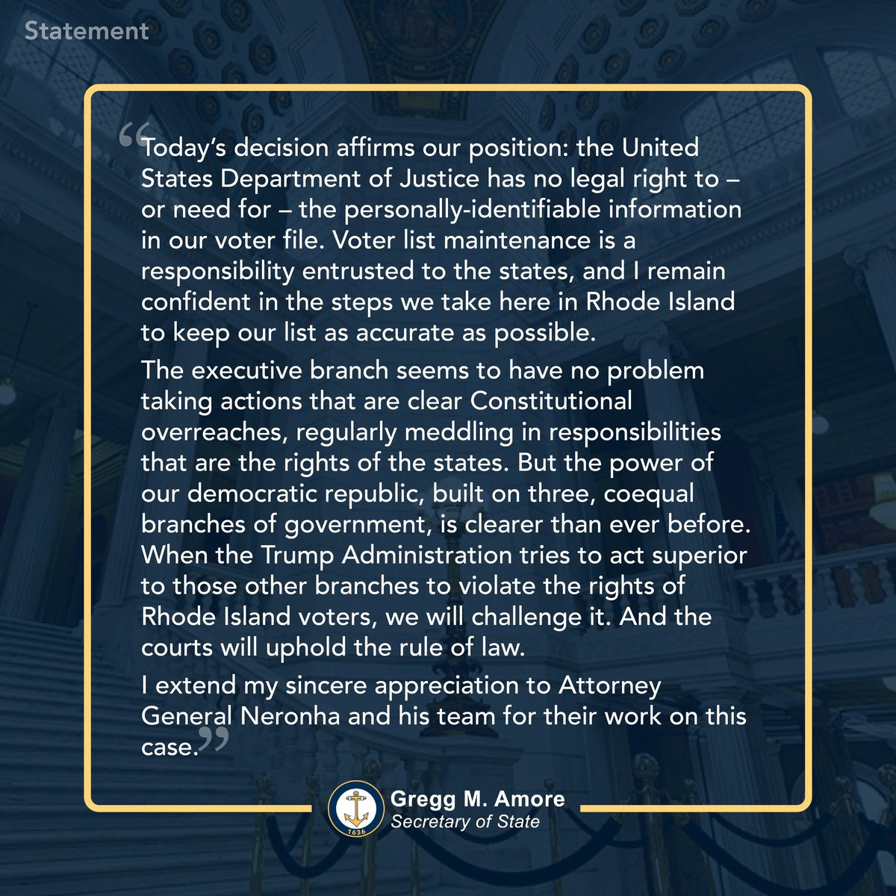

Federal Judge in Rhode Island Dismisses DOJ Attempt to Seize Rhode Islanders' Voter Data
Agreeing with arguments we made in court in March, U.S. District Court Judge Mary McElroy dismissed the U.S. Department of Justice's attempt to obtain Rhode Islanders' sensitive voter data — including driver's license numbers and partial Social Security numbers. This is a huge win for data privacy and voters' rights.
At the hearing, the DOJ's attorney failed to justify why the department needed this information, and acknowledged that the data would be shared with the Department of Homeland Security. Providing the data could also be used to create an unauthorized national voter database, and would be more vulnerable to hackers.
Judge McElroy called the DOJ request a "fishing expedition" that federal law does not permit. Secretary of State Gregg M. Amore praised the ruling, calling recent DOJ demands "clear Constitutional overreaches."

Secretary of State Gregg M. Amore's full statement on the ruling.
2026
2026 Candidate Forums & Election Calendar
The League of Women Voters of Newport County will host nonpartisan candidate forums across all six communities ahead of the 2026 elections — the State Primary on September 9 and the General Election on November 3. The full forum schedule, key voting dates, and who's running are now on our Elections 2026 hub.
Greetings from the LWVRI transition team. We are happy to announce that the transition team has temporarily become members of the state board for the League of Women Voters of Rhode Island. We have had two very good meetings with LWV US and feel very hopeful that the guidance they are offering will get the State League back on a good track and help us assess who we are and who we need to be.
The transition team became part of the Board at the advice of our representatives from National, Whitney Oxendahl and Gabby Udell, because under Rhode Island law an organization like ours must have at least three board members. We joined the two remaining members, Rosemary Forbes-Woodside (LWVNC) and Marylen McKenna (LWVSC). The current members of the Board are Rosemary, Marylen, Faye Zuckerman (LWVRI member-at-large), Christine Martone (LWVSC), and Christine Stenning (LWVNC).
Both Whitney and Gabby agreed that, given the amount of work local leagues are doing ahead of the midterm elections, putting the State League in a holding mode until after the midterms is prudent. That said, the board will meet, as there are needs that must be tended to at the State level. These are: first, the current board will fulfill the obligation of the former board to be part of the team holding a gubernatorial forum on September 30. Second, the commitment to gather data on those in our state who would be affected by potential passage of the SAVE Act. Third, the potential roll-out of a new website for the State League.
Keep supporting your local leagues, because in doing so, you support the State League.
Newport County note: two of the five current state board members come from our local League — Rosemary Forbes-Woodside and Christine Stenning, LWVNC's own President.
Secretary of State Amore Pushes Back on DOJ "Intimidation Letter" Over Rhode Island's Voter Rolls
Rhode Island Secretary of State Gregg M. Amore announced that he received a July 7 letter from the U.S. Department of Justice regarding compliance with federal voting laws — a letter he characterized as an intimidation tactic rather than a genuine offer of assistance. "The actions of this Administration are intended to undermine your trust in our elections processes. This is unacceptable," Amore said.
The Secretary detailed how Rhode Island already maintains accurate voter rolls: the state conducts regular voter list maintenance, including a statewide mailing in November 2025 — the first in over a decade — participates in information-sharing through the Electronic Registration Information Center (ERIC), and requires every voter to attest to their citizenship under penalty of perjury when registering.
This letter follows the Justice Department's failed attempt to seize Rhode Islanders' sensitive voter data, which a federal judge dismissed in April — a case in which the League of Women Voters helped make the winning arguments in court. Amore encourages Rhode Islanders with questions about elections to contact their state and local election officials directly, and invites anyone with actual evidence of voter fraud to report it to his office. Trusted voting information is always available at vote.sos.ri.gov.
General Assembly Adjourns Without Passing the Rhode Island Voting Rights Act
The Rhode Island General Assembly ended its 2026 session without passing the Rhode Island Voting Rights Act (H 8334 / S 3143). Both bills were "held for further study" in committee — the Senate Judiciary Committee on April 7 and the House State Government & Elections Committee on April 16 — and never received a floor vote.
The RIVRA, sponsored by Representative Katherine Kazarian and Senate President Valarie J. Lawson, would codify the protections of the federal Voting Rights Act of 1965 into Rhode Island law, shielding voters here from federal rollbacks. It would protect Rhode Islanders against vote dilution, voter suppression, and voter intimidation, expand language access, and strengthen transparency and accountability in our elections.
The League of Women Voters of Rhode Island testified in strong support of the bill. "The U.S. Supreme Court has weakened key provisions of the landmark 1965 Voting Rights Act. Congress has failed to act. Federal enforcement has diminished. In this moment, states must lead," wrote LWVRI President Gene Thompson-Grove of Newport in testimony to the Senate Judiciary Committee. The League stands with a broad coalition — including the ACLU of Rhode Island, Common Cause Rhode Island, and The Womxn Project — in urging the General Assembly to pass the RIVRA when it reconvenes.
Visit our Action Alerts page to learn how to tell your legislators that Rhode Island voters expect this bill to become law.
Federal Court Blocks US Postal Service from Implementing Executive Order Restricting Mail Voting
The U.S. Postal Service has finalized a rule restricting the delivery of mail ballots. A federal court has blocked it. If the Supreme Court lifts the injunction, the rule takes effect. Either way, the League says NO — mail ballots belong to voters, not the USPS.
On August 11, 2026, a federal district court in Boston issued a preliminary injunction blocking the Postal Service from implementing Section 3 of the President's executive order restricting mail voting — for the November 3 midterm elections and any earlier federal election. Section 3 would have restricted mail voting by giving the Postal Service authority to determine which voters could receive ballots.
The court held unequivocally that "the executive branch has no authority to regulate elections," and found the order is causing "irreparable harm" to voters and voting rights groups by creating confusion about the mail ballots millions of voters rely on. The case was brought by the League of Women Voters and the League of Women Voters of Massachusetts alongside a coalition of nonpartisan organizations, including the ACLU, the Legal Defense Fund, the Association of Americans Resident Overseas, U.S. Vote Foundation, OCA – Asian Pacific American Advocates, and Delta Sigma Theta Sorority, Inc.
"This ruling is a victory for voters and for the Constitution," said Marcia Johnson, the League's chief of activation and justice. "Neither the president nor the US Postal Service has the authority to rewrite election rules."
The injunction is a victory, but not the end of the story — the case can still reach the Supreme Court, and the finalized rule is waiting behind it. See our Action Alerts page for what you can do, including making a plan to request and return your mail ballot early.
WIN! Supreme Court Protects Mail Voting and Preserves States' Authority Over Ballot Receipt Rules
Today, the Supreme Court issued a decision upholding voters' rights and permitting Mississippi voters' ballots that are cast on time to be counted after Election Day according to state law.
The decision reverses the Fifth Circuit's incorrect interpretation of federal Election Day statutes, which would have invalidated decades-old absentee ballot receipt laws and disenfranchised voters who followed all election rules but faced postal delays beyond their control.
"The League celebrates today's Court ruling, which upholds a state's authority to administer its own elections free from federal interference, including determining when validly cast mail ballots are counted," said Celina Stewart, CEO of the League of Women Voters. "As we look toward the 2026 midterm elections, the League will continue working in communities across the country to ensure every eligible voter has the information, resources, and confidence to cast their ballot."